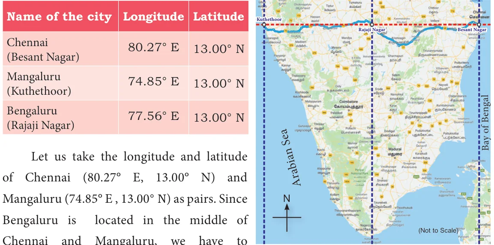
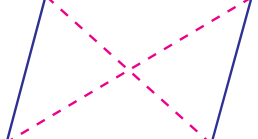
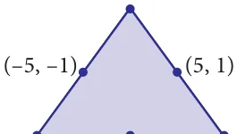
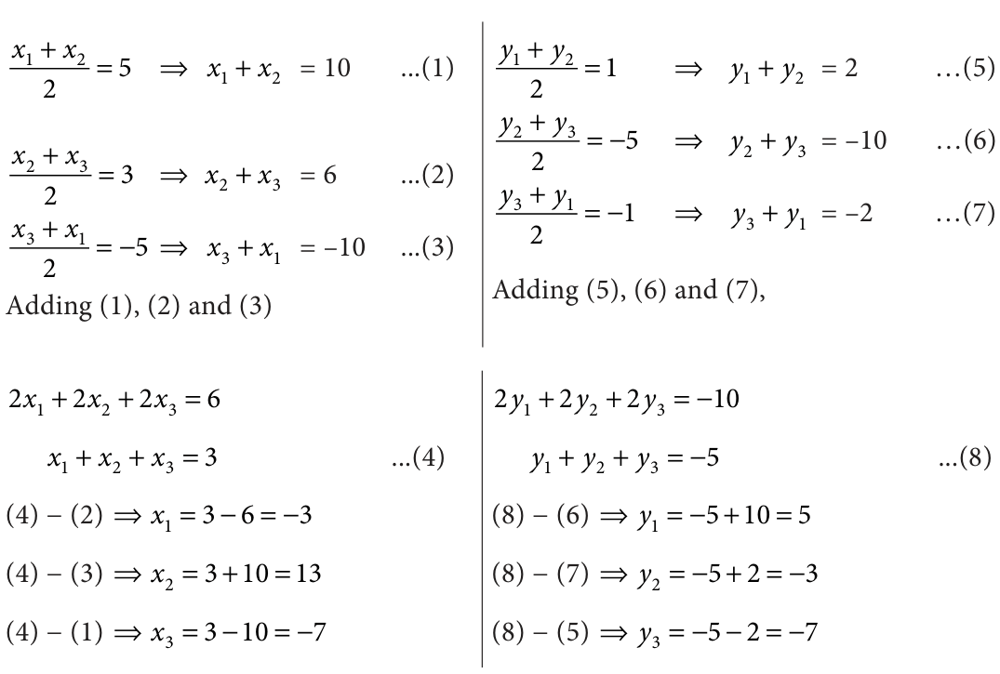

Imagine a person riding his two-wheeler on a straight road towards East from his college to village A and then to village B. At some point in between A and B, he suddenly realises that there is not enough petrol for the journey. On the way there is no petrol bunk in between these two places. Should he travel back to A or just try his luck moving towards B? Which would be the shorter distance? There is a dilemma. He has to know whether he crossed the half way mid-point or not.
The above Fig. 5.21 illustrates the situation. Imagine college as origin O from which the distances of village A and village B are respectively \(x_1\) and \(x_2\) (\(x_1 < x_2\)). Let M be the mid-point of AB then \(x\) can be obtained as follows.
\(AM = MB\) and so, \(x - x_1 = x_2 - x\)
and this is simplified to \(x = \frac{x_1 + x_2}{2}\)
Now it is easy to discuss the general case. If \(A(x_1, y_1)\), \(B(x_2, y_2)\) are any two points and \(M(x, y)\) is the mid-point of the line segment AB, then M' is the mid-point of AC (in the Fig. 5.22). In a right triangle the perpendicular bisectors of the sides intersect at the mid-point of the hypotenuse. (Also, this property is due to similarity among the two coloured triangles shown; In such triangles, the corresponding sides will be proportional).

\(x\)-coordinate of \(M\) = the average of \(x\)-coordinates of A and C \(= \frac{x_1 + x_2}{2}\) and similarly,
\(y\)-coordinate of \(M\) = the average of \(y\)-coordinates of B and C \(= \frac{y_1 + y_2}{2}\)
The mid-point \(M\) of the line segment joining the points \(A(x_1, y_1)\) and \(B(x_2, y_2)\) is
$$M\left(\frac{x_1 + x_2}{2}, \frac{y_1 + y_2}{2}\right)$$
find the average of the coordinates, that is \(\left(\frac{80.27 + 74.85}{2}, \frac{13.00 + 13.00}{2}\right)\). This gives \((77.56 ^{\circ} E\), \(13.00 ^{\circ}\) N) which is the longitude and latitude of Bengaluru. In all the above examples, the point exactly in the middle is the mid-point and that point divides the other two points in the same ratio.
ight)\). This gives \((77.56 ^{\circ} E\), \(13.00 ^{\circ}\) N) which is the longitude and latitude of Bengaluru. In all the above examples, the point exactly in the middle is the mid-point and that point divides the other two points in the same ratio.The required mid-point is \(\left(\frac{-8 + 4}{2}, \frac{-10 - 2}{2}\right)\) or \((-2, -6)\).
Let us now see the application of mid-point formula in our real life situation, consider the longitude and latitude of the following cities.

Let us take the longitude and latitude of Chennai (80.27° E, 13.00° N) and Mangaluru (74.85° E, 13.00° N) as pairs. Since Bengaluru is located in the middle of Chennai and Mangaluru, we have to find the average of the coordinates, that is \(\left(\frac{80.27 + 74.85}{2}, \frac{13.00 + 13.00}{2}\right)\). This gives (77.56° E, 13.00° N) which is the longitude and latitude of Bengaluru. In all the above examples, the point exactly in the middle is the mid-point and that point divides the other two points in the same ratio.
Example 5.12
The point \((3, -4)\) is the centre of a circle. If AB is a diameter of the circle and B is \((5, -6)\), find the coordinates of A.
Solution
Let the coordinates of A be \((x_1, y_1)\) and the given point is \(B(5, -6)\). Since the centre is the mid-point of the diameter AB, we have
$$\frac{x_1 + x_2}{2} = 3 \qquad \frac{y_1 + y_2}{2} = -4$$
$$x_1 + 5 = 6 \qquad y_1 - 6 = -8$$
$$x_1 = 6 - 5 = 1 \qquad y_1 = -8 + 6 = -2$$

Therefore, the coordinates of A is \((1, -2)\).
Progress Check
- Let X be the mid-point of the line segment joining \(A(3, 0)\) and \(B(-5, 4)\) and Y be the mid-point of the line segment joining \(P(-11, -8)\) and \(Q(8, -2)\). Find the mid-point of the line segment XY.
- If \((3, x)\) is the mid-point of the line segment joining the points \(A(8, -5)\) and \(B(-2, 11)\), then find the value of '\(x\)'.
Example 5.13
If \((x, 3)\), \((6, y)\), \((8, 2)\) and \((9, 4)\) are the vertices of a parallelogram taken in order, then find the value of \(x\) and \(y\).
Solution
Let \(A(x, 3)\), \(B(6, y)\), \(C(8, 2)\) and \(D(9, 4)\) be the vertices of the parallelogram ABCD. By definition, diagonals AC and BD bisect each other.

Mid-point of AC = Mid-point of BD
$$\left(\frac{x + 8}{2}, \frac{3 + 2}{2}\right) = \left(\frac{6 + 9}{2}, \frac{y + 4}{2}\right)$$
Equating the coordinates on both sides, we get

\(\frac{x + 8}{2} = \frac{15}{2}\) and \(\frac{5}{2} = \frac{y + 4}{2}\)
\(x + 8 = 15\) and \(5 = y + 4\)
Hence, \(x = 7\) and \(y = 1\).
Thinking Corner
\(A(6, 1)\), \(B(8, 2)\) and \(C(9, 4)\) are three vertices of a parallelogram ABCD taken in order. Find the fourth vertex D. If \((x_1, y_1)\), \((x_2, y_2)\), \((x_3, y_3)\) and \((x_4, y_4)\) are the four vertices of the parallelogram, then using the given points, find the value of \((x_1 + x_3 - x_2, y_1 + y_3 - y_2)\) and state the reason for your result.
Example 5.14
Find the points which divide the line segment joining \(A(-11, 4)\) and \(B(9, 8)\) into four equal parts.
Fig. 5.26
Solution
Let P, Q, R be the points on the line segment joining \(A(-11, 4)\) and \(B(9, 8)\) such that \(AP = PQ = QR = RB\).
Here Q is the mid-point of AB, P is the mid-point of AQ and R is the mid-point of QB.
Q is the mid-point of AB \(= \left(\frac{-11 + 9}{2}, \frac{4 + 8}{2}\right) = \left(\frac{-2}{2}, \frac{12}{2}\right) = (-1, 6)\)
P is the mid-point of AQ \(= \left(\frac{-11 - 1}{2}, \frac{4 + 6}{2}\right) = \left(\frac{-12}{2}, \frac{10}{2}\right) = (-6, 5)\)
R is the mid-point of QB \(= \left(\frac{-1 + 9}{2}, \frac{6 + 8}{2}\right) = \left(\frac{8}{2}, \frac{14}{2}\right) = (4, 7)\)
Hence the points which divide AB into four equal parts are \(P(-6, 5)\), \(Q(-1, 6)\) and \(R(4, 7)\).
Example 5.15
The mid-points of the sides of a triangle are \((5, 1)\), \((3, -5)\) and \((-5, -1)\). Find the coordinates of the vertices of the triangle.

Solution
Let the vertices of the \(\triangle ABC\) be \(A(x_1, y_1)\), \(B(x_2, y_2)\) and \(C(x_3, y_3)\) and the given mid-points of the sides AB, BC and CA are \((5, 1)\), \((3, -5)\) and \((-5, -1)\) respectively. Therefore,

Therefore the vertices of the triangle are \(A(-3, 5)\), \(B(13, -3)\) and \(C(-7, -7)\).
Thinking Corner
If \((a_1, b_1)\), \((a_2, b_2)\) and \((a_3, b_3)\) are the mid-points of the sides of a triangle, using the mid-points given in example 5.15 find the value of \((a_1 + a_3 - a_2, b_1 + b_3 - b_2)\), \((a_1 + a_2 - a_3, b_1 + b_2 - b_3)\) and \((a_2 + a_3 - a_1, b_2 + b_3 - b_1)\). Compare the results. What do you observe? Give reason for your result.